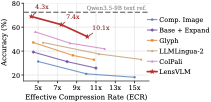
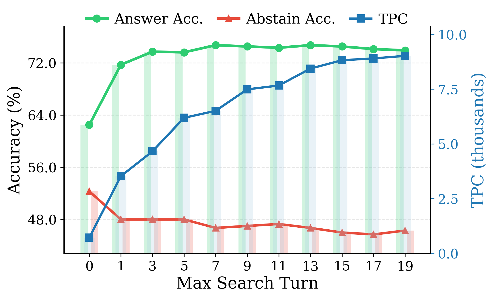
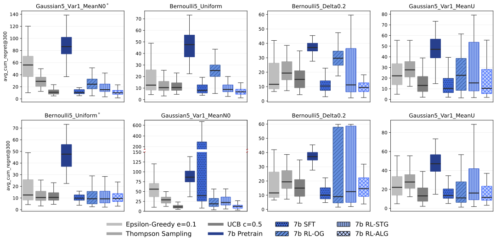
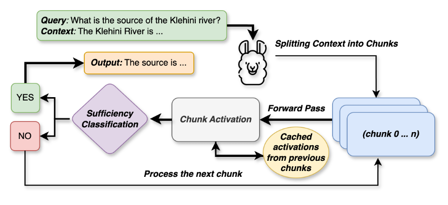
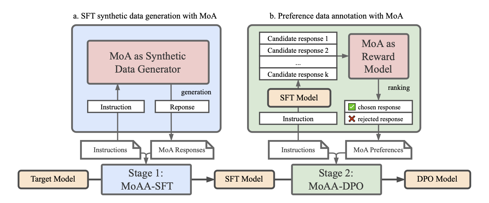

Roy Xie

Ph.D. Student in Computer Science
Duke University
Duke Natural Language Processing Group
ruoyu.xie@duke.edu

I am a final-year Ph.D. student at Duke University, advised by Bhuwan Dhingra. My research focuses on post-training methods for foundation models. I am particularly interested in improving models’ agentic capabilities and efficiency on complex long-horizon tasks.
My research is partially supported by the National Science Foundation Graduate Research Fellowship and the Apple Scholars in AI/ML Ph.D. Fellowship. I am currently interning at Google Research. Previously, I interned with the Apple Foundation Models team.
Recent Publications
-

NeurIPS 2026@inproceedings{xie2026lensvlmselectivecontextexpansion, title={{LensVLM}: Selective Context Expansion for Compressed Visual Representation of Text}, author={Xie, Roy and Friedman, Dan and Yu, Donghan and Pan, Bowen and Fifty, Christopher and Kim, Jang-Hyun and Du, Xianzhi and Gan, Zhe and Rathod, Vivek and Dhingra, Bhuwan}, booktitle={Advances in Neural Information Processing Systems}, year={2026}, eprint={2605.07019}, archivePrefix={arXiv}, primaryClass={cs.CV}, url={https://arxiv.org/abs/2605.07019}, } -

EACL 2026 (Oral)@inproceedings{xie-etal-2026-searching, title={Over-Searching in Search-Augmented Large Language Models}, author={Xie, Roy and Gopinath, Deepak and Qiu, David and Lin, Dong and Sun, Haitian and Potdar, Saloni and Dhingra, Bhuwan}, booktitle={Proceedings of the 19th Conference of the {E}uropean Chapter of the {A}ssociation for {C}omputational {L}inguistics (Volume 1: Long Papers)}, editor={Demberg, Vera and Inui, Kentaro and Marquez, Llu{\'i}s}, pages={7714--7739}, month=mar, year={2026}, address={Rabat, Morocco}, publisher={Association for Computational Linguistics}, doi={10.18653/v1/2026.eacl-long.361}, url={https://aclanthology.org/2026.eacl-long.361/}, } -

ICLR 2026@inproceedings{ICLR2026_5e24b2a1, title={When Greedy Wins: Emergent Exploitation Bias in Meta-Bandit {LLM} Training}, author={Chen, Sanxing and Chen, Xiaoyin and Huang, Yukun and Xie, Roy and Dhingra, Bhuwan}, booktitle={International Conference on Learning Representations}, editor={C. Vondrick and B. Hariharan and C. Raffel and L. Pinto and D. Yang and A. Faust}, volume={2026}, pages={57389--57421}, year={2026}, url={https://proceedings.iclr.cc/paper_files/paper/2026/hash/5e24b2a1d5acc5da7d9144121577b6a0-Abstract-Conference.html}, } -

NeurIPS 2025@inproceedings{NEURIPS2025_3afa7f9b, title={Knowing When to Stop: Efficient Context Processing via Latent Sufficiency Signals}, author={Xie, Roy and Wang, Junlin and Rosu, Paul and Deng, Chunyuan and Sun, Bolun and Lin, Zihao and Dhingra, Bhuwan}, booktitle={Advances in Neural Information Processing Systems}, editor={D. Belgrave and C. Zhang and H. Lin and R. Pascanu and P. Koniusz and M. Ghassemi and N. Chen}, volume={38, Main Conference}, pages={41213--41240}, publisher={Curran Associates, Inc.}, year={2025}, doi={10.52202/085713-1376}, url={https://proceedings.neurips.cc/paper_files/paper/2025/hash/3afa7f9b7ac8da474b3d915570d58291-Abstract-Conference.html}, } -

ICML 2025@inproceedings{pmlr-v267-wang25dr, title={Improving Model Alignment Through Collective Intelligence of Open-Source Models}, author={Wang, Junlin and Xie, Roy and Zhu, Shang and Wang, Jue and Athiwaratkun, Ben and Dhingra, Bhuwan and Song, Shuaiwen Leon and Zhang, Ce and Zou, James}, booktitle={Proceedings of the 42nd International Conference on Machine Learning}, editor={Singh, Aarti and Fazel, Maryam and Hsu, Daniel and Lacoste-Julien, Simon and Berkenkamp, Felix and Maharaj, Tegan and Wagstaff, Kiri and Zhu, Jerry}, series={Proceedings of Machine Learning Research}, volume={267}, pages={64976--64997}, publisher={PMLR}, month={13--19 Jul}, year={2025}, url={https://proceedings.mlr.press/v267/wang25dr.html}, }